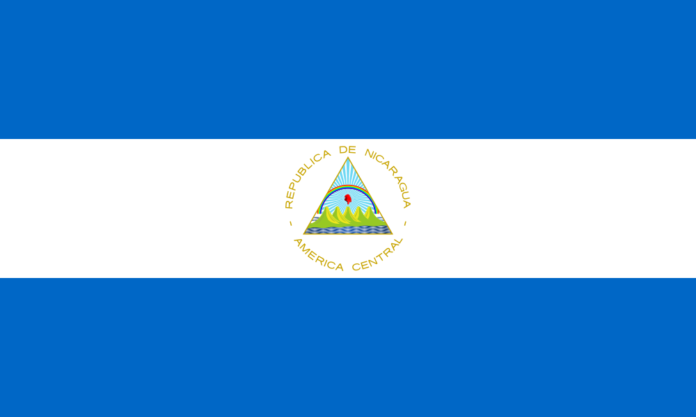
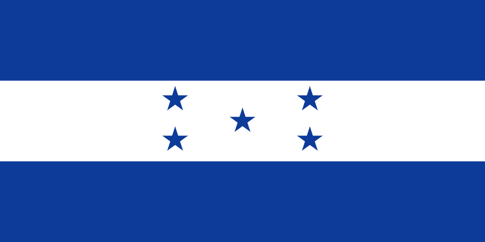

День мёртвых 

(исп. El Día de Muertos)
—
праздник, посвящённый памяти умерших, проходящий ежегодно 1 и 2 ноября в:
-
 Мексике
Мексике
- Гватемале
-  Никарагуа
-  Гондурасе
-
 Сальвадоре
Сальвадоре
Празднование календарно совпадает с двумя католическими праздниками — Днём всех святых (1 ноября) и Днём всех душ (2 ноября). Традиции, связанные с праздником, включают в себя создание частных алтарей в честь покойного, включающие черепа из сахара, вербену, любимые продукты и напитки умершего и посещение могилы с этими подарками.
В эти дни устраивается карнавал, готовятся сладости в виде черепов и фигурок одетых женских скелетов, напоминающих Катрину.
Ко Дню мёртвых украшают кладбища лентами и цветами, дороги к домам умерших их родственники заставляют свечами, чтобы покойник мог найти дорогу домой.